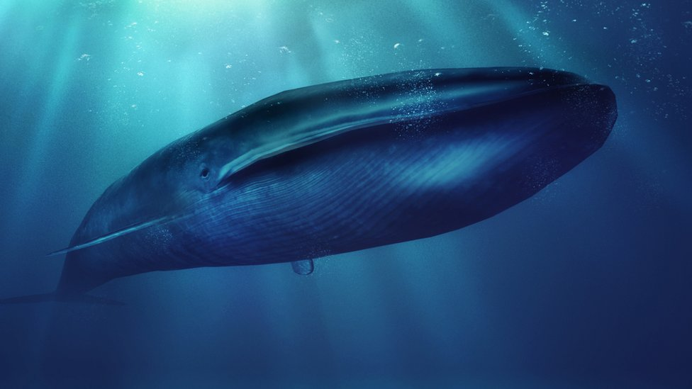

La ballena azul es la más grande de todas, con una longitud promedio de 25 a 30 metros y un peso de hasta 200 toneladas
También conocido como rorcual norteño o ballena de aleta, es la segunda ballena más grande, con una longitud de 18 a 20 metros y un peso de hasta 100 toneladas.
Esta especie tiene una longitud promedio de 13 a 15 metros y puede pesar hasta 25 toneladas.
Descubierto relativamente recientemente en 2003, el rorcual de Omura tiene una longitud de alrededor de 10 metros y puede pesar hasta 10 toneladas.
Aunque no es tan grande como las primeras en la lista, la ballena jorobada sigue siendo impresionante, con una longitud de 12 a 16 metros y un peso de hasta 40 toneladas.
A continuacion algunos datos curiosos de animales acuáticos
-Las ballenas son conocidas por su sofisticado sistema de comunicación. Emplean una variedad de sonidos, como silbidos, golpes y cantos complejos.
-Las ballenas jorobadas pueden viajar miles de kilómetros desde sus zonas de alimentación en aguas frías hasta sus áreas de reproducción en aguas más cálidas.
-Algunas especies de ballenas, como la ballena azul y el cachalote, son campeonas en buceo profundo. Pueden sumergirse a profundidades de hasta 1000 metros o más en busca de presas.
-Las ballenas desempeñan un papel crucial en la salud de los océanos y en el equilibrio de los ecosistemas marinos.